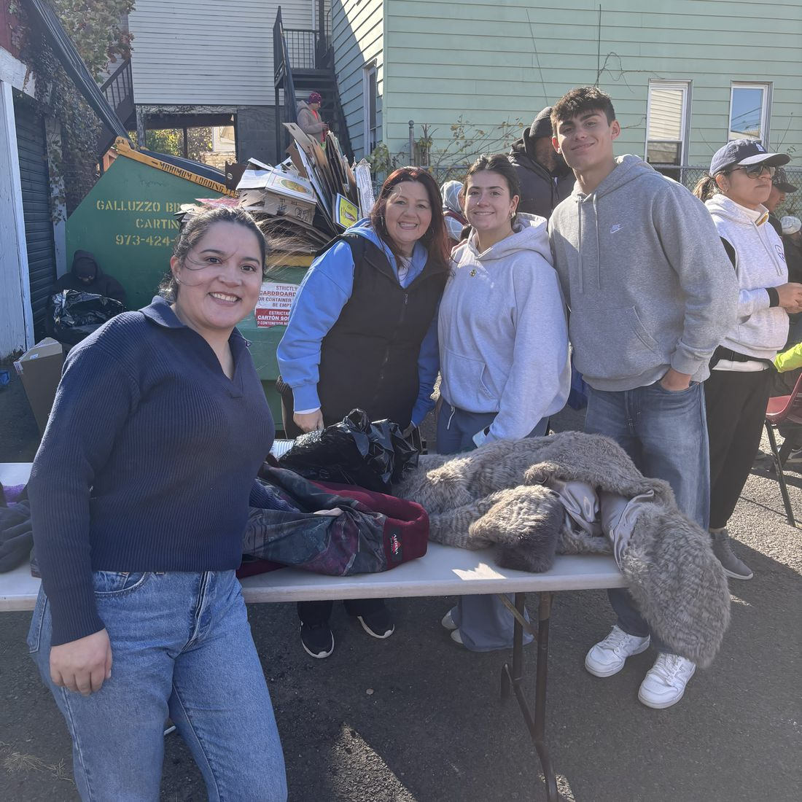
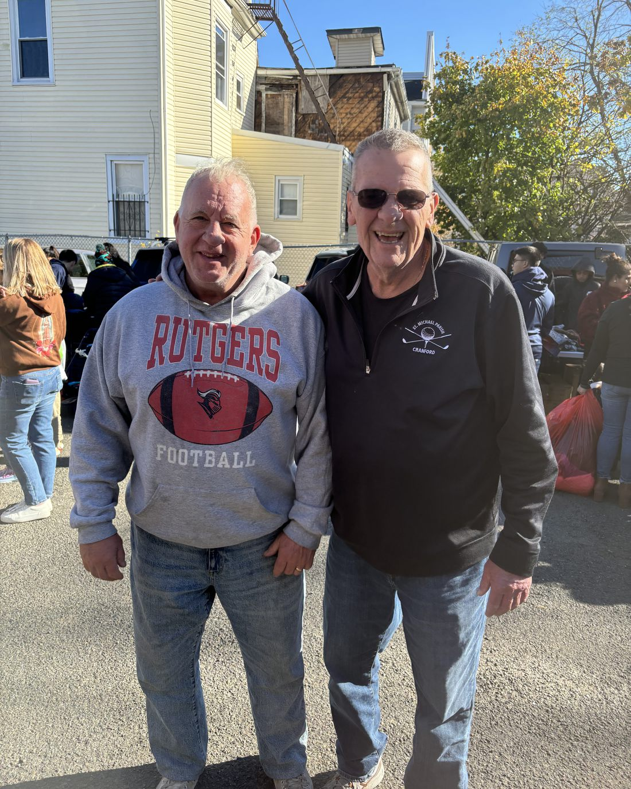
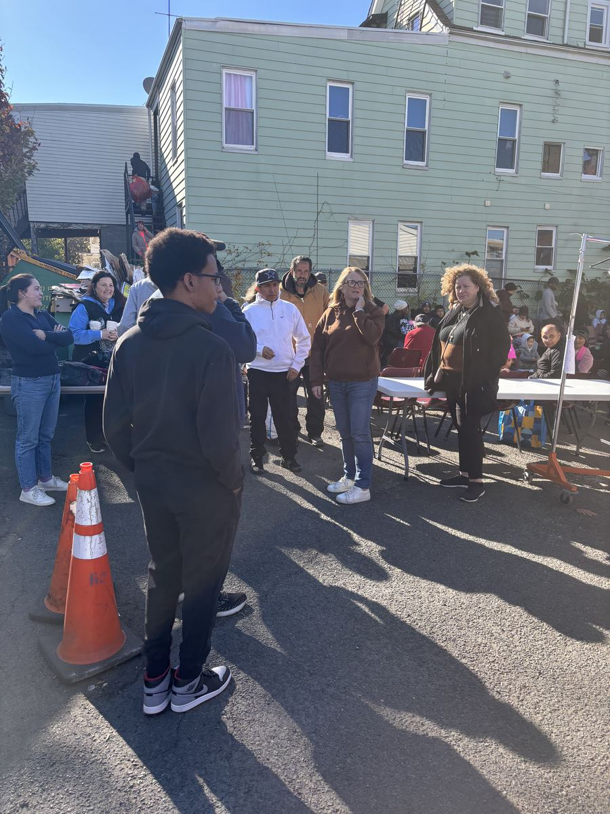
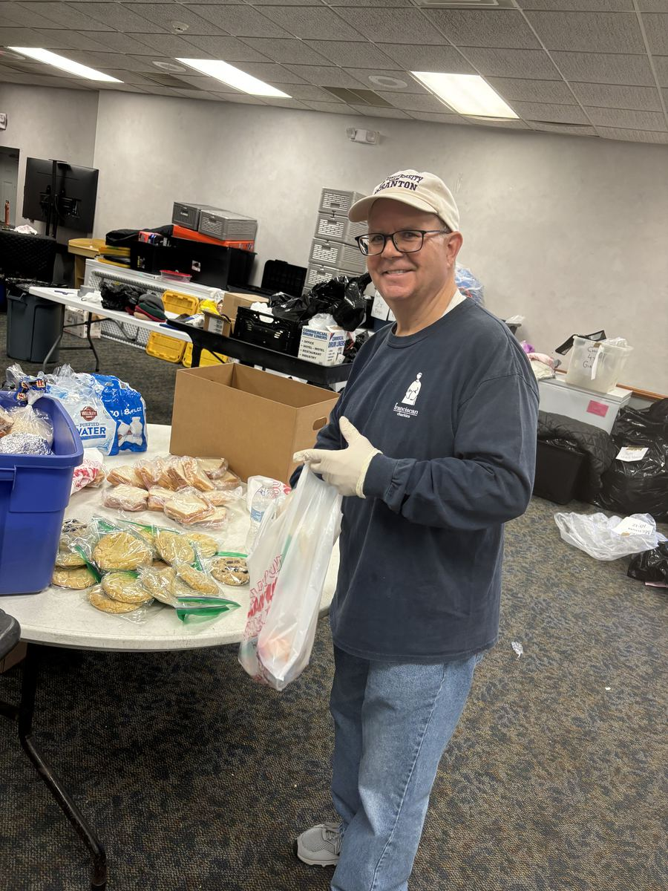
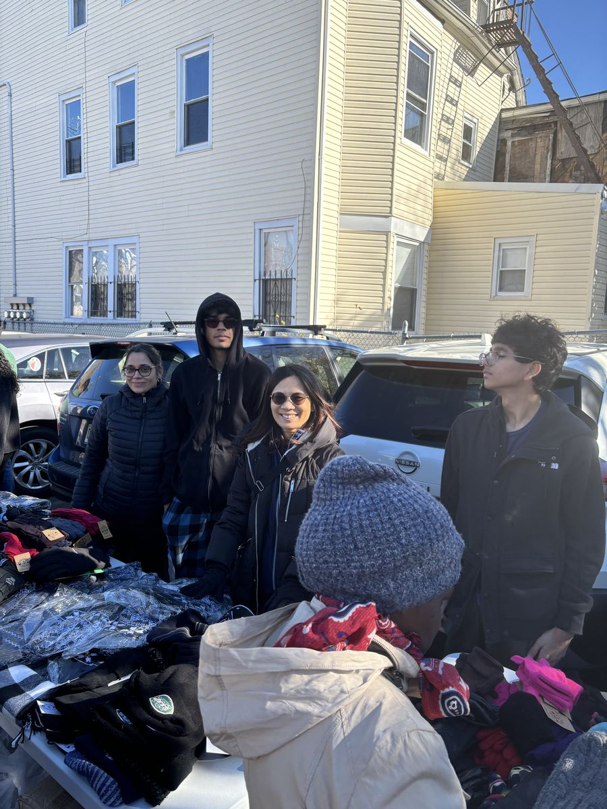
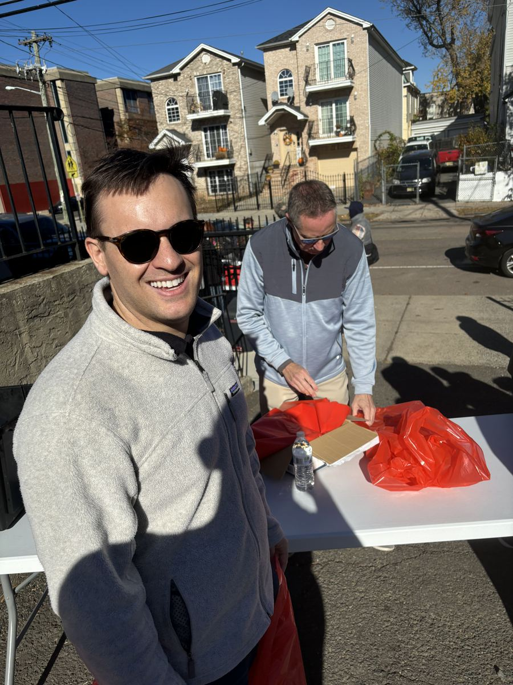
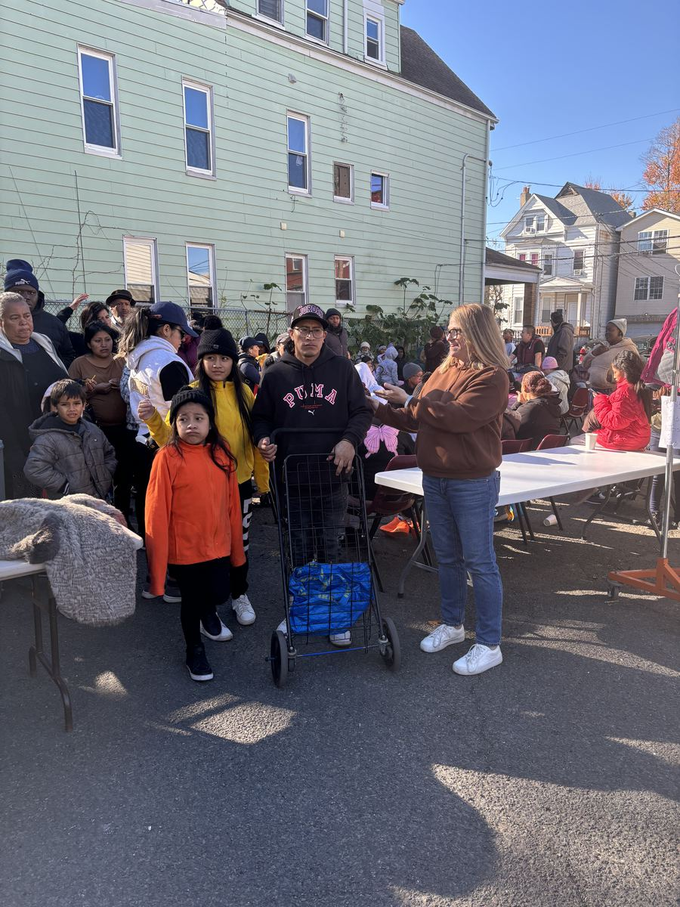
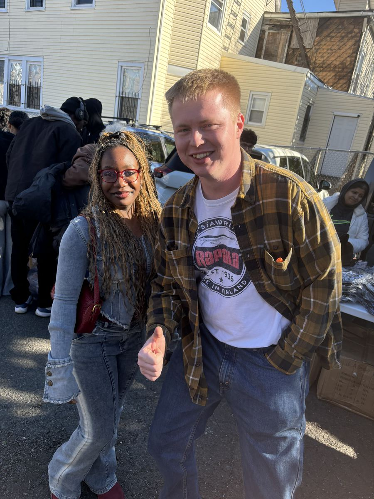

Hot Meals
Freshly cooked, served warm and without questions — the heart of everything we do.
Since 2004 · Newark's Central Ward
We feed and clothe our neighbors in Newark — with dignity and kindness, no questions asked. Nimble, resilient, small but mighty.


Our mission
In 2004, Brother Paul Miller began serving hot meals to the poor of Newark's Central Ward. Two decades later, that simple act of hospitality has grown into a lifeline — meals, clothing, and food-pantry support for thousands of families, offered with the same belief he started with: everyone deserves dignity.
We stay small on purpose. It lets us move fast, meet people where they are, and put nearly every dollar straight onto the table. When a neighbor walks through our doors, there's no paperwork and no judgment — just a warm meal and a kind word.
Two decades of showing up
What we do
No appointment, no eligibility test. Just help, when it's needed.
Freshly cooked, served warm and without questions — the heart of everything we do.
Groceries and staples families can take home, stocking the shelves between paychecks.
Warmth against the cold and joy in December — thousands of coats and gifts each year.
Supplies and a fresh start so kids walk into the new year ready to learn.
On the ground
Hot food, warm coats, and a few thousand kind words — handed out with dignity, no questions asked.






Join us
Your gift becomes a meal on a table this week. Every dollar goes straight to the work.
See ways to give →Serve a meal, sort coats, pack backpacks. Bring an hour or a Saturday — we'll find you a place.
Volunteer with us →Companies, congregations, and foundations help us scale. Let's do more together.
Become a partner →We don't ask people to prove they're hungry. We just feed them — and we remind them, in a hundred small ways, that they still matter.
Brother Paul Miller · Founder, Franciscan Charities
Ways to give
A 501(c)(3) nonprofit — your gift is tax-deductible to the fullest extent of the law.
A one-time or monthly gift that puts hot meals on tables this week. Every dollar goes straight to the work.
Play, sponsor a hole, or donate a prize at our signature annual outing.
Sponsorships, matching gifts, and team volunteer days for businesses.
Include us in your will and leave a lasting legacy of care.
Join our circle of monthly sustainers who help us plan ahead.